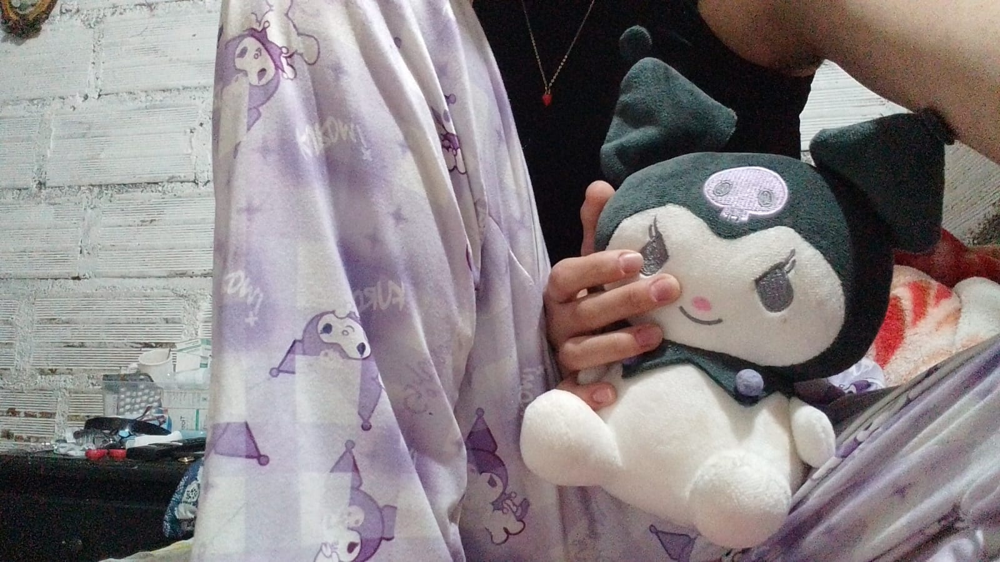
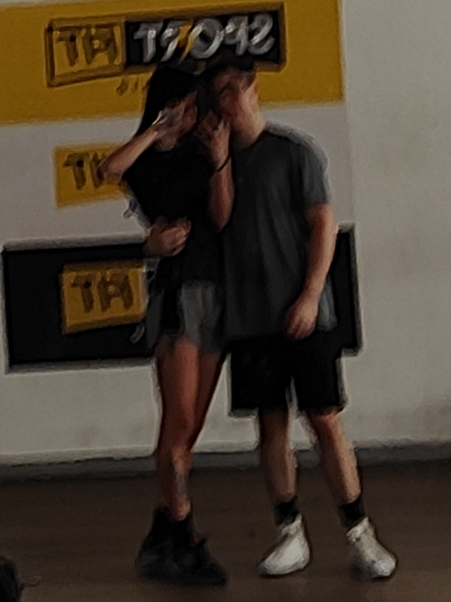

🖤
Kuromi
Ese abrazo tan incomodo que sería el primero de muchos
Aquella Kuromi que tanto me demoré escogiendo porque no quería darte algo barato, algo común
pero tampoco quería ser tan obvio en que lo que sentía por ti ya estaba formado, ese perfume que sin imaginarlo
seria tan especial para ti, ese pequeño detalle de "Lo tenía guardado" que sin saberlo para ti fue lo mas bonito
tú sin pensar y yo sin creer, por esa Kuromi estamos juntos

